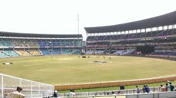
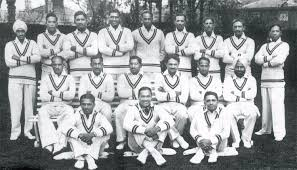
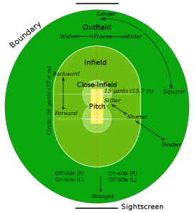
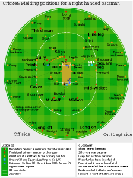
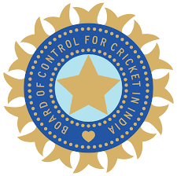
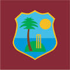
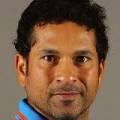
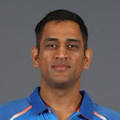

Cricket is a bat-and-ball game played between two teams of eleven players on a field at the centre of which is a 20-metre (22-yard) pitch with a wicket at each end, each comprising two bails balanced on three stumps. The batting side scores runs by striking the ball bowled at the wicket with the bat, while the bowling and fielding side tries to prevent this and dismiss each player (so they are "out"). Means of dismissal include being bowled, when the ball hits the stumps and dislodges the bails, and by the fielding side catching the ball after it is hit by the bat, but before it hits the ground. When ten players have been dismissed, the innings ends and the teams swap roles. The game is adjudicated by two umpires, aided by a third umpire and match referee in international matches. They communicate with two off-field scorers who record the match's statistical information.
|  |  |
| Criket pitch | Cricketers |
|---|
There are various formats ranging from Twenty20, played over a few hours with each team batting for a single innings of 20 overs, to Test matches, played over five days with unlimited overs and the teams each batting for two innings of unlimited length. Traditionally cricketers play in all-white kit, but in limited overs cricket they wear club or team colours. In addition to the basic kit, some players wear protective gear to prevent injury caused by the ball, which is a hard, solid spheroid made of compressed leather with a slightly raised sewn seam enclosing a cork core which is layered with tightly wound string.
Welcome to the greatest game of all – Cricket. This site will help explain to an absolute beginner some of the basic rules of cricket. Although there are many more rules in cricket than in many other sports, it is well worth your time learning them as it is a most rewarding sport. Whether you are looking to play in the backyard with a mate or join a club Cricket-Rules will help you learn the basics and begin to enjoy one of the most popular sports in the world. The game is ever popular, with many fans attending to watch their local and national teams, the craze is always growing. With a number of big tournaments like The Ashes, IPL League and the granddaddy of them all, the ICC World Cup Cricket 2019! The game of cricket is highly popular, and the number of cricket betting fans who place bets on their national and local teams is also growing.
|  |  |
The aim of the batsmen is to score runs. One of the main cricket rules is that for batsmen to score runs they must run to each other’s end of the pitch (from one end to the other). In doing this one run is scored. Cricket rules state they may run multiple runs per shot. As well as running they can also score runs by hitting boundaries. A boundary scores the batsmen either 4 or 6 runs. A four is scored by hitting the ball past the boundary after hitting the ground while a six is scored by hitting the ball past the boundary on the full (before it hits the ground). Cricket rules also state that once a 4 or 6 has been scored any runs physically ran by the batsman are null & void. They will only obtain the 4 or 6 runs.
|  |  | |||
| INDIA | AUSTRALIA | ENGLAND | PAKISTAN | WEST INDIES |
|  |  | |||
| SACHIN | M.S. DHONI | DON BRODMAN | VIRAT | SHANE WARNE |
On 19th September, 2007, India's Yuvraj Singh became the first-ever batsman to send six balls over the boundary in a row for the first time in a T20I. He hammered England's Stuart Broad to every corner of the ground in the 19th over of the match. He was the first Indian and second overall player to achieve the feat in international cricket. Herschelle Gibbs was the first player to hit 6 sixes in an over. He tonked Daan van Bunge of The Netherlands, all around the park at St.Kitts in the 2007 World Cup.
All Rights Reserved
Developed & Maintained by SSK